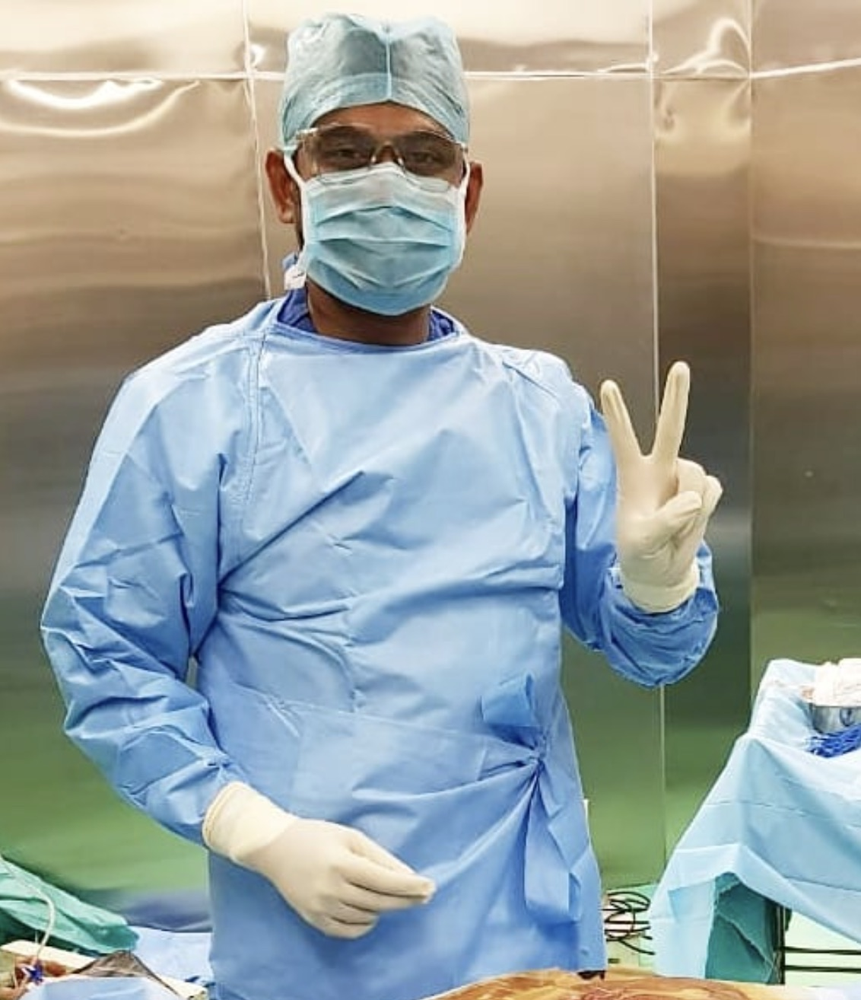
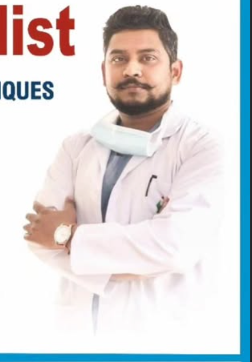

CORE APPROACHPrecision without
Precision without
the clinical coldness.
Every touchpoint is designed to make surgical care clearer, calmer and more personal.
Your wellness, our priority — modern surgical care with a calm, patient-first experience, led by Dr. Mohnish Kumar in Rajpura.
Sharan Healthcare combines surgical expertise, modern techniques and a straightforward patient experience in Rajpura.
Every touchpoint is designed to make surgical care clearer, calmer and more personal.
General & Laparoscopy Surgeon focused on precise, modern and patient-centered surgical care.
Explore the surgical and general conditions listed by Sharan Healthcare. Tap a card to learn what the clinic lists for that area of care.

Laparoscopic procedures use specialized instruments and a camera through small access points. Treatment decisions depend on the individual patient and clinical assessment.
Sharan Healthcare lists 24-hour emergency availability.
Doctors Lane, Work Centre Colony
Near AP Jain Civil Hospital – PMN College Road
Rajpura, Punjab 140401
The clinic material lists general and laparoscopic surgical services including hernia, gallbladder, appendix, hydrocele, trauma and several other conditions.
Monday–Saturday: 10 AM–2 PM and 4 PM–7 PM. Sunday: 12 Noon–4 PM.
Use the appointment request form or call the clinic. The clinic should confirm the actual slot.
Doctors Lane, Work Centre Colony, near AP Jain Civil Hospital, PMN College Road, Rajpura, Punjab 140401.
No. Educational content is general information and does not replace an examination or consultation with a qualified medical professional.
Book a consultation with Dr. Mohnish Kumar.
See Sharan Healthcare
in the real world.
Latest posts, photos and videos from the clinic's Instagram — newest updates first. Follow for health tips, clinic news and behind-the-scenes.

📷 PHOTO